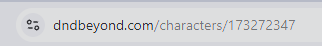

Bring the character.
Review the details.
v0.2.0 Beta · A guided, one-time import to get your character ready for a campaign in Foundry.
Bring a character into your game.
The builder walks you through importing a public D&D Beyond character into Foundry. Start with a character number or link, or use a saved JSON export. From there, the workshop guides you through matching content, resolving missing features, and building the character.

It is meant to help a player get ready to join your game, with opportunities for the GM to review anything that needs attention.
Match the character to your compendiums.
The workshop matches the character’s D&D Beyond features, spells, and equipment to content in your world’s approved compendium sources. It uses the Foundry versions of those entries, including their existing rules and functions.
Your world’s configured sources provide the defaults. Make sure the importing user can access the books and compendiums you want the character to use.
Review missing features. Choose alternatives.
When a feature does not have a clear match, the builder gives you a chance to find it in your compendiums or choose a suitable replacement before the character is built.
You can also leave an entry for later review. Where applicable, skipped entries become a name-only item marked Needs GM Review, so the GM can finish or replace it afterward. These placeholders do not include working rules or automation for the missing feature.
Let the builder fill in the character.
The module runs through Foundry’s own class, species/race, and background character-building functions, filling in values and choices from the D&D Beyond character where it can.
If a choice still needs your input, Foundry presents its normal selection window so you can complete it. The workshop also brings across matched equipment and spells, helping you get the character ready for play.
Review the sheet and import findings.
The final stage lets you open the completed character sheet and review the import findings or issues. Check any missing entries, replacements, or differences flagged by the workshop, and finish anything marked Needs GM Review.
During beta, this is a one-time import and done. It is designed to get someone started in your Foundry game. Once the import is reviewed, future sessions, level-ups, and character changes take place inside Foundry, without needing an ongoing connection to D&D Beyond.
The module does not keep the two character sheets synchronized. D&D Beyond is the starting point for the import; Foundry becomes the character record for your campaign.